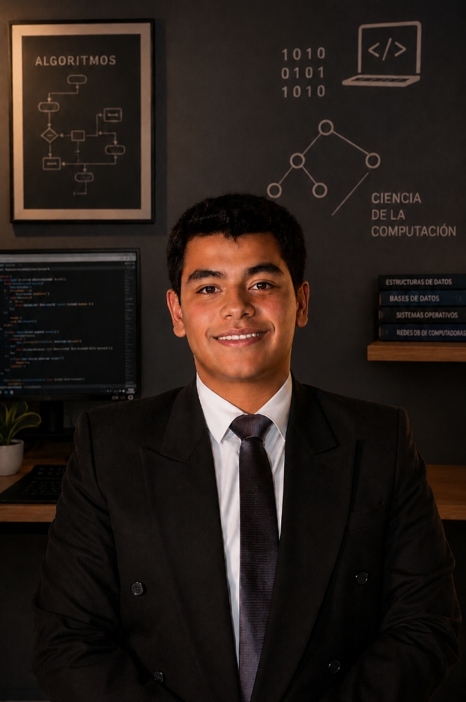
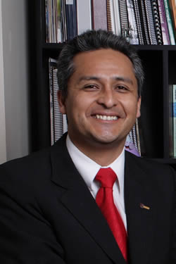
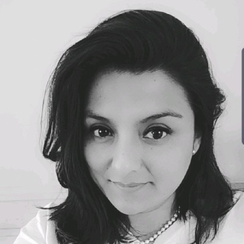

Estudiante de Ciencia de la Computación | Universidad Católica San Pablo (UCSP)
Soy estudiante de la carrera profesional de Ciencia de la Computación en la Universidad Católica San Pablo (UCSP) en Arequipa. Actualmente curso el primer semestre, donde inicio mi formación en fundamentos lógicos, matemáticos y algorítmicos orientados al diseño y desarrollo de soluciones de computación de clase mundial.
Nuestra malla curricular en la UCSP está basada en los lineamientos internacionales de la ACM e IEEE. Estos son algunos de los cursos clave en la carrera:
Estudio global de la disciplina desde una perspectiva científica. Abarca el pensamiento computacional, el funcionamiento elemental de los sistemas y los fundamentos de la teoría de la información.
Introducción a la resolución de problemas estructurados mediante código. Se aprende a diseñar algoritmos y a programar utilizando lenguajes de alto nivel con un fuerte enfoque en buenas prácticas.
Bases matemáticas esenciales para la ciencia de la computación, incluyendo lógica proposicional, teoría de conjuntos, relaciones, funciones y métodos formales de demostración.
Estudio avanzado del paradigma de orientación a objetos (clases, herencia, polimorfismo, encapsulamiento), aplicado al diseño de software robusto, reutilizable y modular.
La UCSP destaca por contar con docentes pioneros e investigadores de amplio reconocimiento académico:

Docente Principal e Investigador de Especialidad
El Dr. Ernesto Cuadros es uno de los principales referentes e impulsores de la Ciencia de la Computación en el Perú y ex-director de la carrera en la UCSP. Es PhD por la USP (Brasil) y único representante latinoamericano en el comité de la ACM/IEEE para el diseño del Currículo Mundial de Computación. Su especialidad abarca Algoritmos, Estructuras de Datos Espaciales e Indización.

Docente de Especialidad e Investigadora UCSP
La profesora Kelly Vizconde es docente de especialidad en el Departamento de Ciencia de la Computación de la UCSP. Se especializa en guiar a los estudiantes en el desarrollo de capacidades algorítmicas fundamentales, dictando con excelencia y gran vocación pedagógica cursos clave de los primeros ciclos como Fundamentos de Programación y Programación Orientada a Objetos.
¿Te gustaría conectar conmigo profesionalmente o discutir sobre proyectos en Ciencia de la Computación?
🔗 Mi Perfil de LinkedIn ✉️ Enviar un CorreoMis compañeros de estudio y colaboradores en proyectos de Ciencia de la Computación en la UCSP:
Estudiante de Ciencia de la Computación. Colaborador en proyectos y trabajos grupales de primer semestre.
Estudiante de Ciencia de la Computación. Compañero de estudio en Fundamentos Matemáticos de Computación y colaborador en proyectos.